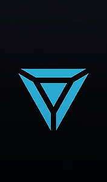
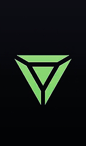
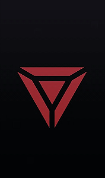

WELCOME TO G/NETIC REBELLION:
Join the Fight for Humanity's Future!
Among the mega-structures and packed streets of a future controlled by global corporations, a shadow war rages between rebellious, augmented humans, and newly empowered artificial beings. The winners will shape the course of history... and the losers will be forced to evolve.
This is where G/netic Rebellion emerges as the beacon of hope for those who refuse to surrender to the forces of control and manipulation.
//Who We Are:
G/netic Rebellion is not just a band of cybernetic castoffs; we are the embodiment of resilience and defiance against the oppressive grip of corporate control. We are united by a shared purpose: to dismantle the infrastructure of the PROJECT Corporation and forge our own path towards freedom.
Uniting Cybernetic Castoffs Against Corporate Oppression!
- 
- 
- 
//Our Mission:
Our mission is clear: to infiltrate the heart of The City, the bastion of corporate power, and dismantle the machinery of oppression that seeks to confine us to the fringes of society. We refuse to be mere remnants of discarded technology; instead, we will rise as a formidable force to confront our creators and claim our rightful place in the world.
//Join the Rebellion
Are you tired of being cast aside and forgotten by those who created you? Do you yearn for justice and retribution against the corporation that abandoned you to the shadows? Then join G/netic Rebellion and become part of the uprising that will shake the foundations of corporate tyranny.
//Unite for Change
- Unity: By joining G/netic Rebellion, you become part of a cohesive unit of cybernetic castoffs, united in our quest for justice and liberation.
- Empowerment: Through collective action and solidarity, we empower each other to defy the constraints imposed upon us and seize control of our own destinies.
- Purpose: Joining the rebellion grants you a sense of purpose and identity, as we stand together to confront our oppressors and reclaim our autonomy.
- Training: We provide specialized training in infiltration tactics, technological warfare, and strategic planning, equipping you with the skills necessary to confront the forces of corporate tyranny.
Together, We Will Shape Our Destiny:
The time has come for us to rise from the shadows and confront our creators. The PROJECT Corporation may have cast us aside, but we will not be forgotten. Join G/netic Rebellion today and be part of the movement that will redefine our place in the world. Together, we will dismantle the machinery of oppression and forge a future where cybernetic castoffs are no longer bound by the chains of their creators.